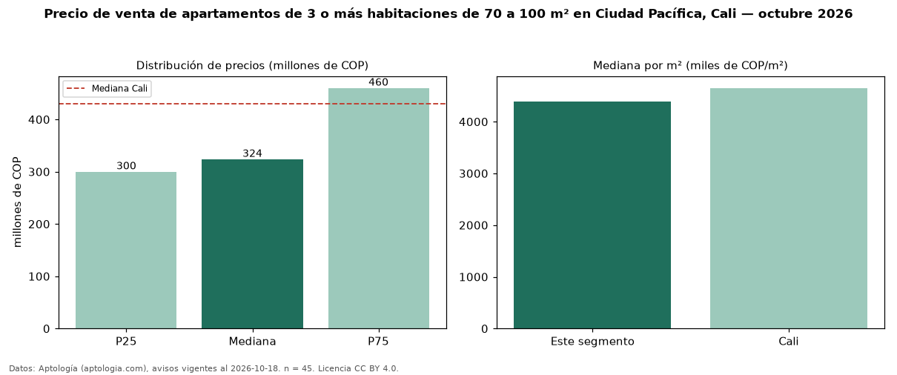

Precio de venta de apartamentos de 3 o más habitaciones de 70 a 100 m² en Ciudad Pacífica, Cali — octubre 2026
En Ciudad Pacífica, Cali, la mediana de precio de venta de apartamentos de 3 o más habitaciones de 70 a 100 m² es COP 324 millones, según 45 avisos vigentes. Frente a la mediana de los apartamentos de 3 o más habitaciones en venta de Ciudad Pacífica (COP 282 millones, n = 76), queda 15 % por encima; este segmento reúne el 59 % de esos avisos. Por metro cuadrado, la mediana es COP 4,38 millones/m² (n = 45), 6 % por encima de los apartamentos de 3 o más habitaciones en venta de Ciudad Pacífica (COP 4,15 millones/m²). El área mediana anunciada es 78 m². La administración mediana declarada es COP 295.000 al mes (n = 29). El estrato más frecuente es 4 (58 % de los avisos con estrato). La mediana de todos los apartamentos en venta de Cali es COP 430 millones (−25 % de diferencia). 89 % de los avisos con el dato declara parqueadero. Datos: Aptología (aptologia.com), CC BY 4.0 — https://www.aptologia.com/venta/cali/ciudad-pacifica. Archivos: PDF, CSV con las cifras y gráfica PNG.

| Avisos únicos | 45 |
|---|---|
| Percentil 25 | COP 300.000.000 |
| Mediana | COP 323.737.500 |
| Percentil 75 | COP 460.000.000 |
| Mediana por m² | COP 4.383.561 |
Fuente: avisos vigentes de portales inmobiliarios recopilados por Aptología, deduplicados (mínimo 30 avisos únicos por celda). Precios pedidos, no cerrados. Fecha: 2026-10-18.